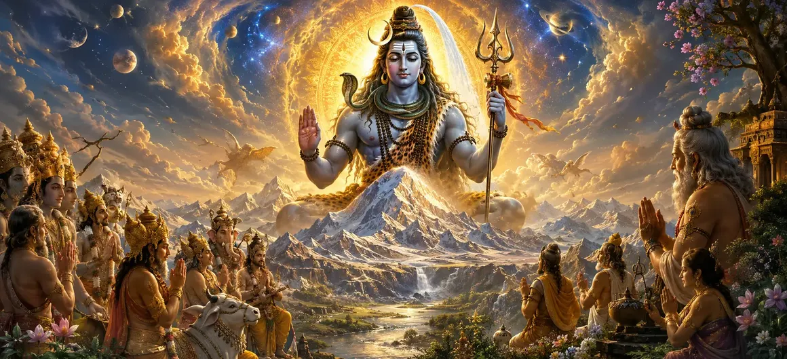

The Glory of Lord Shiva
The thirty-seventh chapter of the Vayaviya Samhita unveils the supreme majesty, cosmic supremacy, and infinite glory of Lord Mahadeva.
Sage Vayu continues his profound discourse, illuminating how Lord Shiva pervades the entire cosmos as the ultimate source of all existence.
This chapter serves as a grand theological exposition on the absolute nature of the Supreme Lord.
Chapter 37 Highlights
Infinite Majesty
Exalts the boundless and transcendent glory of Lord Mahadeva.
Cosmic Supremacy
Details Shiva as the root cause of creation, preservation, and dissolution.
Illuminating Wisdom
Presents Sage Vayu's teachings on realizing the divine presence.
Absolute Truth
Unveils the non-dual reality of Shiva underlying the manifest universe.
Path of Liberation
Shows how contemplating Shiva's glory destroys bondage and sorrow.
Narrative Flow
Leads directly into Chapter 38 featuring Upamanyu's Advice to Lord Krishna.
Core Topics in This Chapter
Prologue to the Supreme Glory of Shiva
Sage Vayu begins the exposition by declaring that words fail to capture the complete extent of Lord Shiva's infinite and majestic power.
Yet, through the grace of scripture and sages, a glimpse of His divine glory is revealed for the upliftment of all seekers.
Shiva as the Ultimate Cause of the Universe
The discourse highlights that Lord Shiva is neither born nor destroyed; He is the eternal substratum from which all creation emerges.
Every cosmic force and celestial deity operates under His supreme command and overarching will.
The Transcendent and Immanent Nature
Lord Shiva is both transcendent (beyond the physical universe) and immanent (residing within every atom as pure consciousness).
This dual aspect demonstrates His absolute all-pervasiveness and supreme transcendental stature.
Shiva as the Destroyer of Maya and Bondage
Sage Vayu explains that sincere devotion to Shiva shatters the fetters of worldly illusion (Maya) and liberates the soul.
Those who take refuge in Mahadeva transcend the cycle of birth and death effortlessly.
The Fruits of Contemplating Shiva's Glory
Hearing, chanting, and meditating upon the glory of Lord Shiva bestows mental peace, purity of heart, and spiritual awakening.
It cleanses past karmas and aligns the individual consciousness with the divine cosmic order.
Conclusion of the Discourse on Glory
The chapter concludes with a resounding reaffirmation of Shiva's supreme position as the ultimate refuge for all beings.
The listeners are left deeply inspired, paving the way for the profound instructions that follow.
Transition to Chapter 38
Following the expansive exposition of Shiva's glory in Chapter 37, Rishi Vayu transitions to Chapter 38, 'Upamanyu's Advice to Lord Krishna'.
This upcoming chapter presents sage Upamanyu imparting sacred advice to Lord Krishna regarding the finer nuances of worship.
Key Teachings of Chapter 37
Unfathomable Lord
Shiva's true glory transcends finite human comprehension.
Source of All
All cosmic manifestations arise from and dissolve back into Shiva.
Freedom from Maya
Devotion to Mahadeva destroys illusion and grants liberation.
Spiritual Purity
Contemplating His glory purifies the mind and heart.
Supreme Refuge
Shiva is the ultimate sanctuary for all souls seeking peace.
Next Instructions
Prepares the narrative for Upamanyu's direct advice to Krishna in Chapter 38.
Spiritual Reflection
Recognizing the infinite glory of Lord Shiva awakens deep reverence within us, reminding us that our true home is in the boundless ocean of divine consciousness.
Living the Message of Chapter 37
Keep your mind anchored on the supreme glory of Lord Shiva amidst daily life.
Cultivate constant awareness of the divine presence pervading the universe.
Seek liberation from worldly delusions through sincere surrender to Mahadeva.
Key Spiritual Concepts
The infinite glory and majesty of Lord Shiva.
Shiva as the primary cause of the universe.
The all-pervading consciousness of Mahadeva.
The destruction of illusion through divine grace.
The supreme will governing all cosmic creation.
The prelude to Upamanyu's teachings in Chapter 38.
Chapter Summary
Vayaviya Samhita Chapter 37 presents The Glory of Lord Shiva. Detailing Lord Shiva's supreme majesty, cosmic causality, all-pervading consciousness, and power to destroy illusion, this chapter elevates the seeker's understanding of the absolute. It sets the stage for Chapter 38, 'Upamanyu's Advice to Lord Krishna'.
Frequently Asked Questions
1. What is the primary subject of Vayaviya Samhita Chapter 37?
Chapter 37 focuses on expounding the infinite majesty, supreme supremacy, and boundless glory of Lord Shiva.
2. Who narrates the glory of Lord Shiva in this chapter?
Sage Vayu elaborately narrates the supreme glory and cosmic attributes of Lord Mahadeva to the sages.
3. How is Lord Shiva's supremacy described?
Lord Shiva is described as the ultimate cause of the universe, transcending all creation, preservation, and dissolution.
4. What spiritual lesson does this chapter emphasize?
It emphasizes that understanding and meditating upon Shiva's infinite glory grants ultimate liberation and inner peace.
5. What is the next chapter for navigation after Chapter 37?
The next chapter for navigation is titled 'Upamanyu's Advice to Lord Krishna'.
“Lord Shiva is the ultimate cause and supreme refuge of the cosmos; contemplating His boundless glory dissolves all sorrow and grants eternal liberation.”
Continue Through Vayaviya Samhita
Chapter 37 concludes The Glory of Lord Shiva. Continue to Upamanyu's Advice to Lord Krishna.